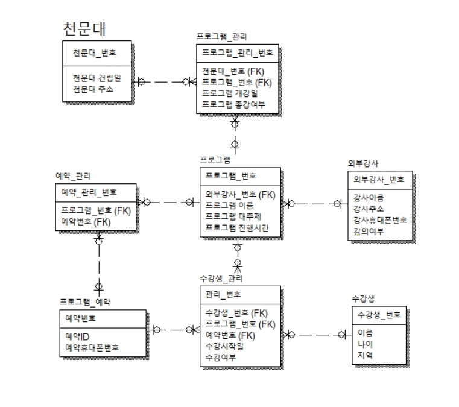

천문대 프로그램 예약 시스템 모델링
ER-Win 프로그램을 이용해서 모델링을 연습하기 위해 주제를 찾던 중 평소에 대전시민천문대에서 진행했던 프로그램이 생각나서 만들어보았습니다.
처음하는 모델링이라 ER-Win 프로그램 사용법부터 관계구조까지 이해하는데 어려움이 있었지만 이틀 간의 시간 안에 최대한 이해하려고 노력했습니다.
그 결과로 프로그램을 이용한 간단한 모델링을 만들 수 있었습니다.
만드는 과정에서는 관계를 어떻게 구성해야 맞는 건지 잘 이해되지 않아서 어려움이 많았습니다.
그래서 수정을 거듭한 끝에 나름의 구조를 갖춘 모델링을 완성했지만, 만들고나서 보니 관계연결이나 내용에서 부족한 점이 여전히 남아있었습니다.
다음에 만드는 모델링은 더 정확한 관계와 더 많은 테이블과 컬럼으로 복잡한 관계를 가진 모델링을 만들어 보려고 합니다.
Technologies:
- - ER-win